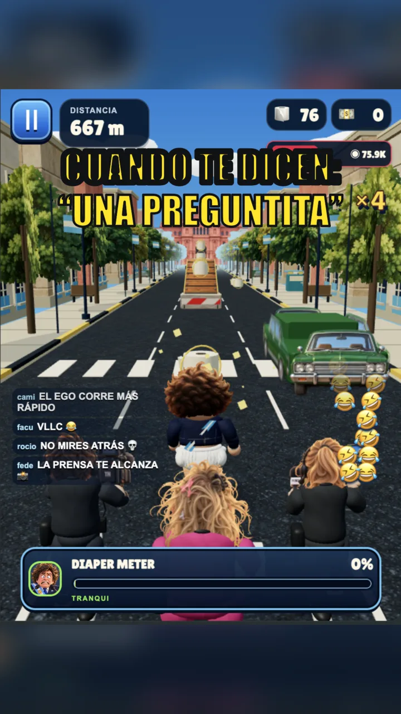
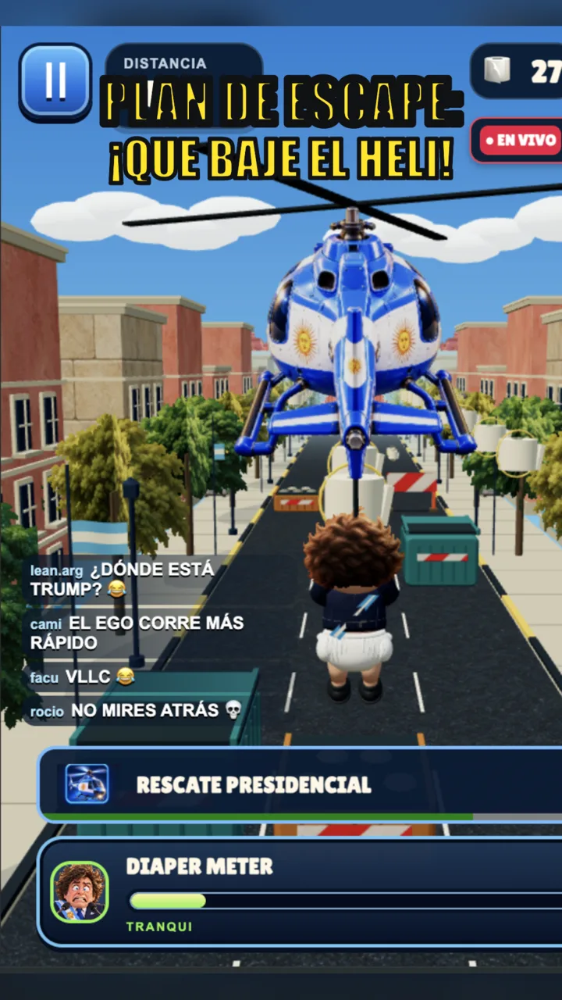
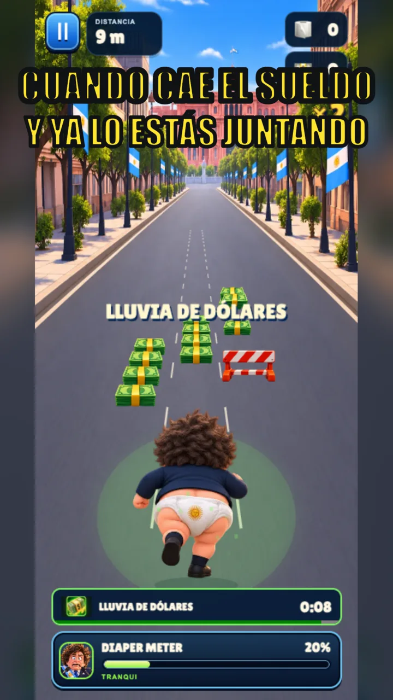
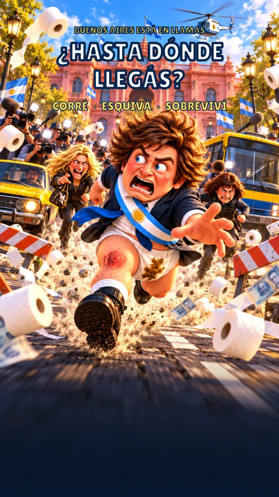

JUEGO DE ACCIÓN · PARODIA
Diaper Boy Milei
Corré, esquivá y dolarizá Argentina
Endless runner con humor político argentino.Compras dentro
de la app
GRATIS · JUGÁ EN TU NAVEGADOR · SIN INSTALAR
4.8★★★★★98 k calificaciones*
#1AventuraEn Argentina*
12+EdadHumor político
◈Sin conexiónJugá en cualquier lugar
*Estadísticas de parodia. Calificaciones ficticias.
Una corrida inolvidable
VER TODO ›
GAMEPLAY REAL
GAMEPLAY REAL
GAMEPLAY REALARTE PROMOCIONALARTE PROMOCIONAL
ARTE PROMOCIONALDescripción
La prensa te sigue. El papel se acaba. ¿Hasta dónde llegás?
Esquivá colectivos, juntá papel y tratá de llegar al helicóptero. Una sátira absurda en las calles de Buenos Aires.
AcciónArcadeHumor
Calificaciones y reseñas
VER TODO ›4.8★★★★★98 k calificaciones ficticias
★★★★★ 12 abr
¡Viva la libertad carajo!El mejor juego, lpm. Corrés, juntás dólares y esquivás zurdos. FIN.
— Javier M. · reseña ficticia★★★★★ 3 may
No hay plataLe metí 3 horas seguidas. Como en el gobierno de Milei... NO HAY PLATA pero hay juegazo.
— Econochanta · reseña ficticia★★★★☆ 20 jun
La casta tiene miedoCada vez que esquivo un político me acuerdo: VIVA LA LIBERTAD CARAJO.
— Libertario22 · reseña ficticiaReseñas y usuarios inventados para esta parodia.
Novedades
VERSIÓN 1.0.9 · NOTA FICTICIAEl helicóptero ya no desaparece cuando más lo necesitás.